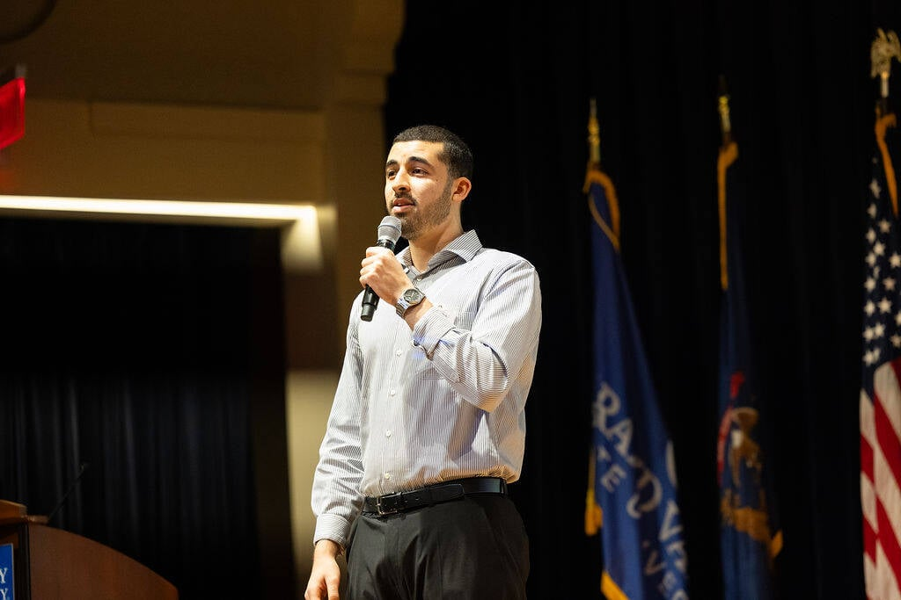
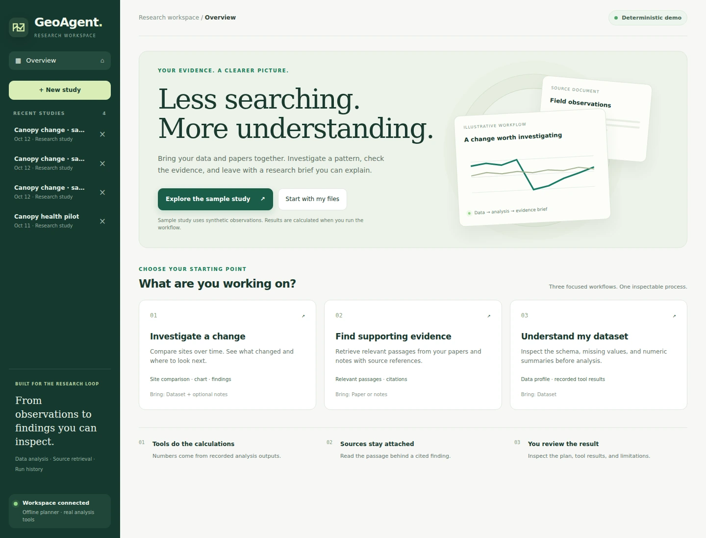
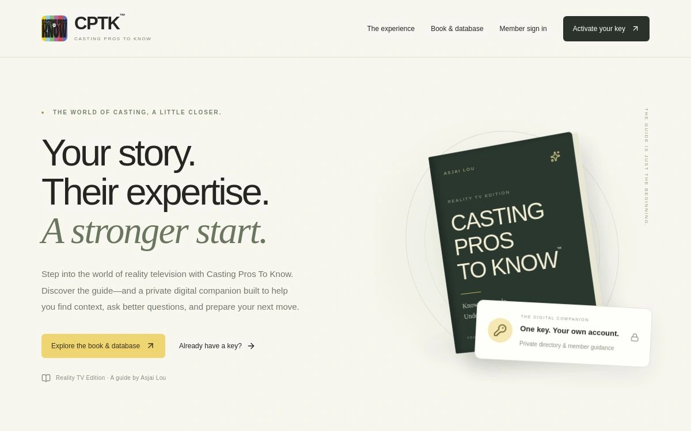
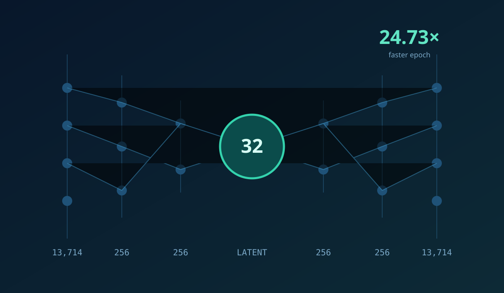
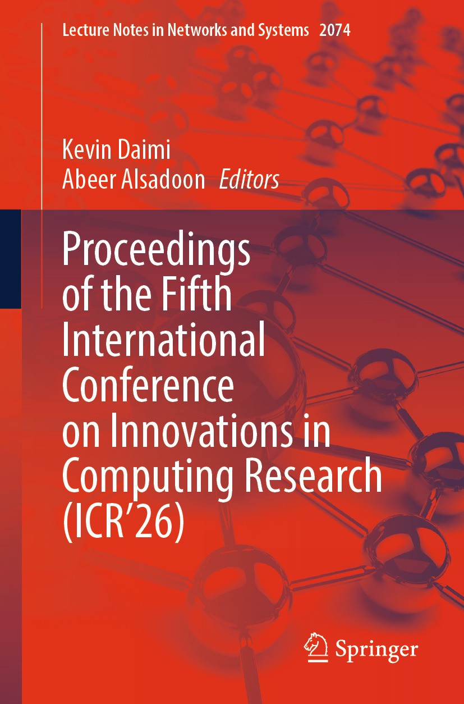
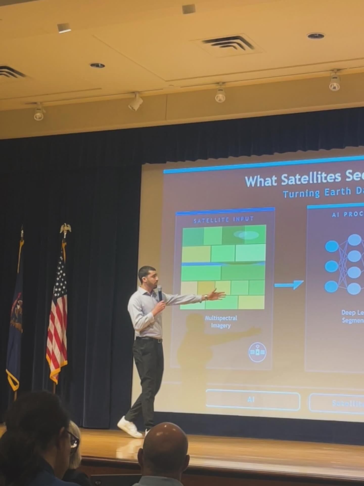

Agentic & Applied AI
LLM agents, retrieval, tool use, workflow automation, APIs, and human-in-the-loop systems.
CORE FOCUS
Graduate researcher · Applied AI
M.S. student in Artificial Intelligence at GVSU
I build and deploy AI applications, train computer vision models, and optimize machine learning systems. At GVSU, I research how satellite data can reveal early signs of vegetation stress.
Agentic AI · Computer Vision · Remote Sensing · ML Systems

Applied AI, machine learning, and research systems.
LLM agents, retrieval, tool use, workflow automation, APIs, and human-in-the-loop systems.
Deep learning, computer vision, data science, model evaluation, and experimentation under real constraints.
High-performance ML, temporal modeling, remote sensing, multimodal data, and research-grade pipelines.
01 / Selected projects
AI applications, research tools, and machine learning systems I’ve built.

Agentic AI · Full-stack research tooling
From satellite observations to evidence you can inspect.
I built a research workbench that brings time-series data, papers, and analysis into one workflow. GeoAgent calculates site-level patterns, retrieves supporting passages, and assembles a cited brief with an inspectable execution trail.
Built into the workflow

CPTK / Explore the engineering case study181 directory records · 65 automated checks passed
Developed for Asjai Lou Casting, CPTK transforms a casting guide into a private digital platform with source-grounded AI guidance, purchase-gated membership, and administrative data management.
Company project · Private source code
 1st Place93.4% Competition Test Accuracy
1st Place93.4% Competition Test Accuracy
1st Place · 93.4% Competition Test Accuracy
I trained a three-model CNN ensemble from scratch on 16×16 RGB images, without pretrained weights. I combined complementary predictions through pseudo-labeling, test-time augmentation, and weighted probability ensembling.
Kaggle · Multiclass Classification Challenge (10C-W26)


Mobile development · Applied AI
AI coaching inside a mobile fitness app. I built BoxAI’s FastAPI backend and React Native integration, combining fitness knowledge retrieval with conversational guidance and profile-based exercise and meal recommendations.
My engineering contribution
Applied ML & Performance
Two complementary strengths: faster ML computation and cost-aware predictive modeling.

01 / ML systems engineering
I optimized two CPU workloads: a sparse ML kernel and a complete autoencoder training epoch. The shared engineering story is memory layout, SIMD, parallelism, and correctness.
 0.946 reported study ROC-AUC
0.946 reported study ROC-AUC02 / Cost-sensitive machine learning
I worked with my team to turn claims data into provider-level risk signals, comparing four classifiers and balancing missed fraud against investigation cost.
02 / Current research
Exploring whether satellite time series can extend drone-based forest monitoring.


Investigate whether satellite time series can flag vegetation anomalies that correspond to drone observations.
Built a time-series pipeline that estimates expected NDVI and maps unusual departures. I test Random Forest alone against the same model augmented with frozen Presto embeddings.
03 / Published research
Peer-reviewed publication
A comparative analysis of explainability methods for machine learning models.
Can different explanation methods agree on what drives a prediction? Our study compares SHAP and LIME across four classifiers to examine consistency in heart-disease risk explanations.

Lecture Notes in Networks and Systems
Research communication
I presented my satellite vegetation-monitoring research at a GVSU pitch competition, where I was a finalist.
GVSU Pitch Competition · FinalistExplore the research ↗04 / Experience
Building useful systems, from applied AI products to satellite research.
Graduate research · Current
2026–PresentGrand Valley State University · Grand Rapids, MI
Researching vegetation-stress monitoring from multisensor satellite time series and foundation-model representations.
See current researchApplied AI
2026Asjai Lou Casting · Remote / New York
Built a deployed commerce and knowledge platform integrating APIs, webhooks, secure workflows, retrieval, and backend services.
View the platform case studyProduct engineering
2025Smart It Partner · Tunis
Integrated RAG and recommendation workflows into a mobile product and built computer-vision capabilities for wildlife monitoring.
Explore related workNetwork intelligence
Aug–Nov 2023Tunisie Telecom · Tunisia
Analyzed network-monitoring data to identify service issues, unusual traffic patterns, and signs of potential attacks. Turned operational signals into clear findings to support troubleshooting and network-security investigations.
05 / Education
A foundation in computer science, advanced through graduate AI study and applied research.
Grand Valley State University
Graduate research in satellite-based vegetation monitoring and applied machine learning.
University of Carthage
Faculty of Sciences of Bizerte
06 / Skills & Expertise
A focused technical profile across intelligent systems, machine learning, and research engineering.
# model development
import torch, tensorflow
import sklearn, xgboost, lightgbm
# evaluation & explainability
import shap, lime
evaluation = ["Cross-validation", "ROC-AUC", "F1"]
modeling = ["Vision", "Feature engineering"]
# language models, agents & retrieval
import langgraph, langchain, faiss
workflows = ["RAG", "Embeddings", "Tool use"]# data pipelines & earth observation
import pandas, numpy, ee
# APIs, tools & deployment
from fastapi import FastAPI
services = ["REST APIs", "Webhooks", "MCP"]
storage = ["SQL", "PostgreSQL", "pgvector"]
delivery = ["Docker", "Git"]
# performance & reliable evaluation
languages = ["Python", "C++"]
compute = ["OpenMP", "SIMD", "Sparse kernels"]
validation = ["Temporal splits", "Leakage checks"]Selected recognition
Competition results, published research, and academic milestones.
Three-model image-classification ensemble · 93.4% test accuracy
Sparse kernel optimization · 6/6 correctness checks
Explainable medical AI · ICR’26 proceedings
Presenting AI for satellite vegetation monitoring
Merit-supported graduate study and applied AI research
Computer Science · Ranked first across all bachelor years
Play against my AI
One board. Two players. Four in a row. You make the first move.
Click any space in an open column.
Your cream piece falls to the lowest space.
Across, down, or diagonally. Beat the green AI.
Let’s connect
I build AI applications, evaluate machine learning models, and turn research into working systems. If that fits your team, I’d love to talk.
ghnimim@mail.gvsu.edu